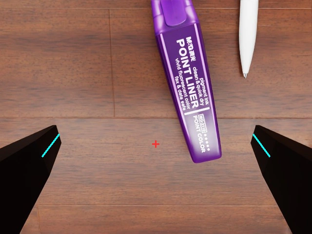

Temporally sampled windows from one expert trajectory.
Earlier temporal anchors and the latest executed segment.
Head and wrist images, robot state, and camera geometry.
Each retained segment includes the observations before and after an action chunk, the action itself, and an execution receipt recording how many steps ran and whether execution was interrupted. Demonstration windows are sampled across time. Online history retains segments at fixed temporal anchors and the latest executed segment, with omitted intervals marked as gaps. This provides temporal coverage, although brief contacts and handovers may fall between the selected windows.
Method
Wrist guides
MXI projects the nominal grasp center and inner finger-pad edges into both demonstration and current-episode wrist images. The same geometric convention lets the model interpret each grasp relative to the hand, even when the object or camera has moved. In the recorded example below, the expert’s right hand holds a purple pen while the robot’s left hand approaches the pen in the current episode.
A shared reference across grasps
Recorded model inputsFill Pen Holder · Recorded wrist views from an earlier configuration with 12 demonstration windows and up to 12 online interactions.


The red cross gives both grasps the same nominal reference. Compare the pen’s position relative to it.
The expert’s right hand holds the pen. At step 87 in the current episode, the pen lies to the right of the left hand’s projected grasp center.
Highlights are reader annotations. The red crosses and cyan pad guides are part of the recorded model inputs.
Camera poses for these frames
Camera-to-environment transforms; translation is in metres. Demonstration pad positions are estimated from the recorded gripper command. Current-episode pad positions use measured finger joints.Aligning the pin with the grasp center
The pin stays on the table.
In the robot model used here, the nominal grasp center is 150 mm along the local x-axis from the link-6 origin, which is the controller’s reference point. Camera intrinsics K determine the projection into the image; the extrinsic transform T relates camera coordinates to the environment frame. Each wrist image retains its own transform as the arm moves. The guides describe nominal robot geometry; contact and object retention must still be assessed from images and execution feedback.
Optional multi-view localization
The optional triangulation tool estimates a target’s 3D position from corresponding image points, camera intrinsics, and camera poses. Two views can recover depth when their rays provide sufficient geometric separation. Additional views can check consistency or improve the estimate when they observe the same feature. The method uses RGB images and calibration, without a depth map.
3D localization from calibrated RGB
Same pixel. Different possible depths.
A point in one image lies somewhere along a 3D ray.
Measured rays rarely intersect exactly. The tool estimates a point near the rays and checks positive depth, geometric conditioning, ray separation, and reprojection consistency. These checks assess geometry, not object identity: a valid estimate on a pen cannot locate the holder the robot intends to grasp.
One reliable point can support a position correction. Two correctly identified points can define a direction, but do not determine a full object pose or surface plane. In a recorded Fill Pen Holder query, the head and right-wrist rays had a minimum separation of 0.12 mm and an angle of 27.1°. These values describe geometric consistency, not measured localization accuracy.
Why timestamp alignment matters
A wrist image paired with a camera pose from another time can produce an incorrect ray. Images, robot state, and camera transforms must therefore refer to the same observation. Retained demonstration frames need their own camera geometry rather than the robot’s current pose.
Motion preview and execution
Optional route tools in the pouring study convert target poses into motion sequences. The proposed path is sampled in Cartesian space, inverse kinematics is solved at each sample, and joint limits and changes between adjacent solutions are checked before execution. The policy then uses the resulting images and execution receipt to decide its next action.
A successful preview does not guarantee successful execution. In one recorded pouring episode, a route passed the checks but stopped on a tracking error; a later transfer completed the task. The cup-placement illustration below shows the kinematic checks separately from physical execution.
Plan, place, release
The preview checks whether the proposed motion has suitable joint solutions. The execution receipt records how much of the requested sequence actually ran and which remaining actions, if any, were discarded. Fresh observations let the policy assess object retention and task progress before continuing.
Benchmark results
RoboDojo measures task progress on a 0–100 scale. Scores are averaged over layouts for each task, then over tasks within each category; the overall mean weights categories equally. The 34-task evaluation includes 591 scored layouts. Q0-Preview values are taken from the 18 November 2026 leaderboard snapshot reported in the paper. These are comparisons of complete systems, whose prompts, demonstrations, and tools may differ.
| Evaluation | MXI-RoboICL | Comparison | Difference |
|---|---|---|---|
| 22 shared tasks3 categories | 80.58 | Original RoboICL52.27 | +28.321 |
| 34 tasks4 categories | 75.93 | Q0-Preview73.20 | +2.73 |
| 8 Open tasksOpen category | 73.13 | Q0-Preview78.20 | −5.07 |
| 42 tasks5 categories | 75.37 | Q0-Preview74.20 | +1.17 |
¹ The comparison with the original RoboICL Report uses the shared Precision, Long-Horizon, and Memory categories. The 28.32-point difference is calculated before rounding the means.
Scores by category
| Category | MXI-RoboICL | Q0-Preview |
|---|---|---|
| Generalization | 61.95 | 64.00 |
| Precision | 72.13 | 65.30 |
| Long-Horizon | 71.48 | 69.80 |
| Memory | 98.15 | 93.68 |
Optional route tools: matched pouring layouts
| Task | Matched layouts | Base tools | With route tools |
|---|---|---|---|
| Pour Balls into Vase | 10 | 70 | 100 |
Mean task-progress scores on ten matched Pour Balls into Vase layouts, with the same demonstration, prompt, and step budget in both conditions. Route preview and execution are added to the shared base tools.
Scoring-related information
This study tests sensitivity to scoring-related input. For RoboICL, scoring tiers were removed and any task requirements they contained were restated in natural language. For Q0, the reduction removed numerical completion tolerances, evaluator-derived flags, and selected scene measurements. Both retained task goals and robot calibration, and the evaluator was unchanged.
| Task | Scenes | RoboICL original → reduced | Q0 original → reduced | Difference in score changes |
|---|---|---|---|---|
| Build Tower | 7 | 64.3 → 100.0 | 67.1 → 58.6 | +44.3 |
| Fasten Screws | 7 | 62.9 → 70.0 | 48.6 → 50.0 | +5.7 |
| Insert Tubes | 6 | 76.7 → 80.0 | 43.3 → 66.7 | −20.0 |
| Play Stacking Toy | 3 | 30.0 → 26.7 | 53.3 → 53.3 | −3.3 |
| Organize Table | 2 | 100.0 → 87.5 | 87.5 → 75.0 | 0.0 |
All 25 scenes have scores under both input conditions for both methods. The last column is RoboICL’s score change minus Q0’s, calculated before rounding; positive values favor RoboICL. The results vary by task, and the interventions remove different information, so this is not a matched test of an identical input field.
Compact task specification
Across 34 archived task configurations, the median policy specification contains 6,258 characters of shared instructions, tool schemas, and additional task notes. This is 76.3% fewer characters than Q0 and 84.5% fewer than HexaShell in the same audit. Most MXI configurations use the shared specification without an additional task note.
This comparison measures the written policy specification, not the full model input. Runtime requests also include demonstrations, observation history, robot state, and geometry. Three archived requests using 12 demonstration windows and up to 12 online interactions contain 161,162–205,786 text characters. A compact specification therefore does not imply a small runtime context or lower API cost.
Limitations and outlook
Geometric references make the robot’s nominal grasp region explicit, but successful manipulation also depends on target identity, stable contact, object support, and recovery. Recorded failures include a holder being disturbed during a grasp and geometrically consistent estimates on the wrong object. The policy must assess new images and execution receipts after each action chunk to decide whether to continue, correct, or recover.
Sources and further reading
- RoboICL source code — implementation and configuration.
- RoboDojo — benchmark and evaluation protocol.
- uni-robot-agent — related work on general-purpose robot agents.